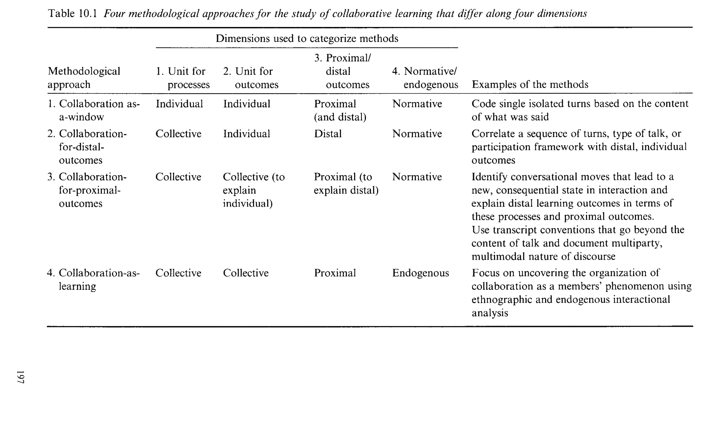
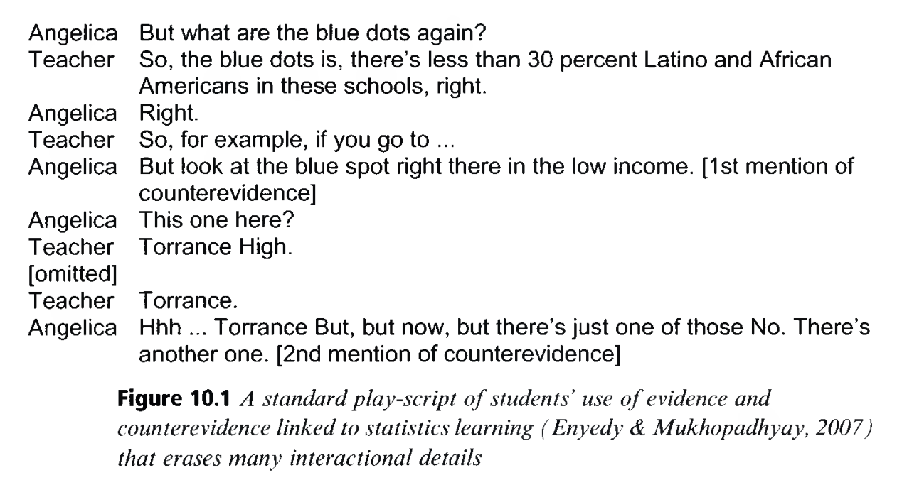
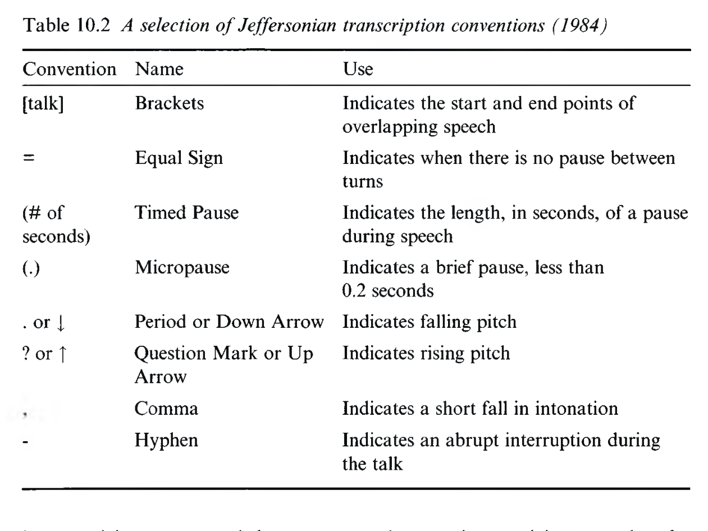
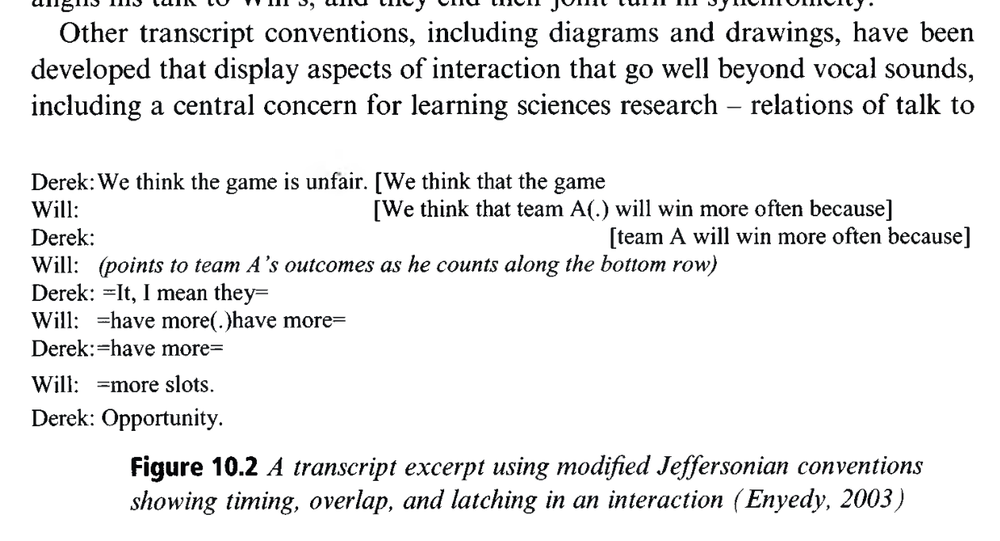
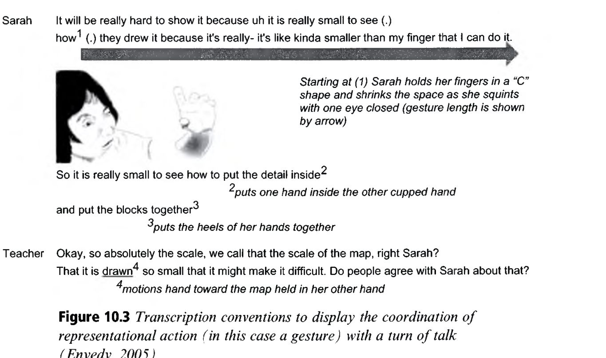

Analyzing Collaboration
협력 상호작용 분석: 담화(Talk), 제스처(Gesture), 시선(Gaze), 그리고 다중모달 분석
👥 저자 및 출처
Noel Enyedy (Vanderbilt) & Reed Stevens (Northwestern)
『The Cambridge Handbook of the Learning Sciences』 (3rd Ed., 2022, pp. 197–218)
🎯 챕터 핵심 아젠다
- 협력 연구 4대 접근법 (Table 10.1): 창 ➔ 맥락 ➔ 조율 ➔ 학습 자체
- 제퍼슨 전사 체계 (Table 10.2 & Figure 10.2): 겹침, 래칭, 침묵
- 체화된 다중모달 분석 (Figure 10.3): 언어, 지시 제스처, 공동 시선
- 미래 지평: 다중모달 학습분석학(MMLA)과 AI 비디오 분석
🎯 강의 목표 및 핵심 맥락 (Context & Goal)
본 장은 학습과학 연구의 가장 핵심적인 미시 분석 방법론인 '상호작용 분석(Interaction Analysis)'과 '대화분석(Conversation Analysis)'의 이론적 스펙트럼과 전사 툴킷을 탐구합니다.
📖 원문 심층 학술 해설 (Detailed Academic Commentary)
노엘 에니디(Noel Enyedy)와 리드 스티븐스(Reed Stevens)는 교실 담화 분석, 체화된 다중모달 상호작용(Embodied Interaction), 전문직 실천 분석 분야를 이끌어 온 대표적 학습과학자들입니다.
💡 수업/세미나 진행 팁 & 질문 가이드
"두 학생이 짝 프로그래밍을 할 때, 0.5초의 침묵이나 손가락으로 화면을 가리키는 동작이 왜 언어보다 더 중요한 학습의 증거가 될까요?"라는 질문으로 시작하세요.
협력 상호작용 분석의 4대 방법론적 접근 (Table 10.1)
인지주의에서 사회인지, 상호작용주의, 사회문화적 실천으로의 확장
🧭 4대 접근법의 학문적 지형도
- 1. 사고의 창: 대화는 개인 뇌 속 멘탈 모델의 투사 (인지주의)
- 2. 학습 촉진 맥락: 협력은 개인의 인지 갈등을 유발하는 배경 (사회인지)
- 3. 근접 성과 조율: 턴 단위로 상호주관성을 공동 구축 (상호작용주의)
- 4. 협력=학습 자체: 실천 공동체 참여 양식의 질적 변혁 (사회문화주의)

🎯 강의 목표 및 핵심 맥락
원서 Table 10.1을 통해 협력 학습을 바라보는 4가지 상이한 인식론적·방법론적 패러다임을 대조 분석합니다.
📖 원문 심층 학술 해설
1번과 2번 접근법은 학습의 위치를 '개인 머릿속'에 두는 반면, 3번과 4번 접근법은 학습을 '사람들 사이의 상호작용과 집단적 실천' 그 자체로 규정합니다.
💡 수업/세미나 진행 팁 & 질문 가이드
자신의 연구가 이 4가지 접근법 중 어디에 기반하고 있는지 성찰해 보세요.
접근법 1: 사고를 엿보는 창 (Window-onto-Thinking)
대화 데이터를 통해 개인의 뇌 속 멘탈 모델과 인지 구조를 추론한다
🧠 인지주의적 전제
- 학습은 개인의 두뇌 속 지식 구조(스키마)의 획득 및 수정
- 대화는 머릿속 생각을 외부로 보여주는 '투명한 창문'
- Ericsson & Simon (1984)의 언어 프로토콜 분석(Think-aloud)
📊 정량적 코딩 스킴 (Coding Schemes)
- 발화를 문장 단위로 쪼개어 사전 정의된 범주(질문, 설명, 반박)로 분류
- 카테고리 빈도를 통계적으로 검증하여 개인의 인지 상태 추정
- (Chi, 1997의 정성적 언어 데이터의 정량화 분석법)
🎯 강의 목표 및 핵심 맥락
접근법 1의 이론적 전제와 분석 기법(언어 프로토콜 분석, 정량 코딩 스킴)을 설명합니다.
📖 원문 심층 학술 해설
이 접근법은 개인의 인지적 성장을 측정하기에 유용하지만, 대화가 상대방의 반응에 따라 유동적으로 변화하는 '상호작용적 본질'을 포착하지 못하는 한계가 있습니다.
💡 수업/세미나 진행 팁 & 질문 가이드
코딩 테스트 시 '소리 내어 생각하기(Think-aloud)'가 어떻게 이 접근법의 전형인지 설명하세요.
접근법 2: 학습을 촉진하는 맥락으로서의 협력
동료와의 대화가 어떻게 개인의 인지 갈등과 개념 변화를 유발하는가?
👥 사회인지적 갈등론 (Socio-cognitive)
- 피아제와 비고츠키의 결합: 동료의 반론(반례)이 인지 갈등 유발
- 동료 간 상호 스캐폴딩(Peer Scaffolding)을 통한 ZPD 확장
- 개인의 학습 성장을 위한 '최적의 외적 촉진 맥락(Context)'
🎭 표준 연극 대본식 전사 (Play-script)
- 누가 무슨 발화를 했는가에 집중하는 희곡 대본 형식 (Figure 10.1)
- 발화의 내용적 의미와 논증 구조(Claim, Evidence, Counter-evidence) 분석
🎯 강의 목표 및 핵심 맥락
접근법 2의 사회인지적 갈등 메커니즘과 연극 대본식 전사(Play-script)의 특징을 분석합니다.
📖 원문 심층 학술 해설
이 접근법은 동료 간의 피드백과 설명하기(Explaining) 활동이 개인의 개념 변화를 어떻게 돕는지를 밝혀내는 데 주로 사용됩니다.
💡 수업/세미나 진행 팁 & 질문 가이드
다음 슬라이드에서 실제 연극 대본식 전사 사례(Figure 10.1)를 살펴보겠습니다.
표준 연극 대본식(Play-script) 전사 분석 (Figure 10.1)
통계 학습에서 증거와 반증을 주고받는 학생들의 담화 분석 (Enyedy & Mukhopadhyay, 2007)
📝 담화의 논증적 구조 분석
- 주장 (Claim): Gwen이 5가 더 많이 나왔다는 표면적 패턴 주장
- 반증 (Counterevidence): Leo가 주사위의 독립 사건 속성을 제시하며 반박
- ➔ 동료의 반론이 학생의 소박 직관을 흔드는 인지적 갈등 유발 과정 확인

🎯 강의 목표 및 핵심 맥락
원서 Figure 10.1을 통해 표준 연극 대본식 전사가 학생 간의 인지적 갈등과 개념 발달을 어떻게 표현하는지 분석합니다.
📖 원문 심층 학술 해설
연극 대본식 전사는 읽기 쉽고 논증 구조를 파악하기 용이하지만, 말의 타이밍, 망설임, 신체 제스처 등의 미세 상호작용 정보는 유실된다는 한계가 있습니다.
💡 수업/세미나 진행 팁 & 질문 가이드
이 대화에서 "Gwen의 표정이 어땠을지, 몇 초 동안 머뭇거렸을지"가 왜 중요한지 다음 단계로 연결하세요.
접근법 3: 근접 집단 성과와 조율되는 상호작용
턴 단위(Turn-by-turn)로 구축되는 상호주관성(Intersubjectivity)과 공동의 지식 구성
🔄 상호작용주의 (Interactionism)
- 학습은 개인 머릿속이 아니라 참여자들 사이의 대화 턴(Turn) 속에 존재
- 앞 화자의 발화가 다음 화자의 반응을 규정하는 순차적 구조(Sequentiality)
- 공통의 이해를 점진적으로 맞춰가는 상호주관성(Intersubjectivity) 형성
🔬 대화분석(CA)과 제퍼슨 전사 체계
- 0.1초의 침묵, 말의 겹침, 억양의 미세한 떨림까지 정밀 기록
- 개념이 '언제, 어떤 상호작용적 계기로 공유되었는지'를 가시화
🎯 강의 목표 및 핵심 맥락
접근법 3의 핵심인 대화분석(Conversation Analysis)과 상호작용주의의 이론적 전환을 설명합니다.
📖 원문 심층 학술 해설
상호작용주의자들에게 지식은 고정된 물질이 아니라, 참여자들이 대화를 주고받으며 협상하고 정교화해 나가는 '동적 과정(Interactional Achievement)'입니다.
💡 수업/세미나 진행 팁 & 질문 가이드
대화에서 "아..." 하고 0.5초 멈추는 순간이 왜 깨달음의 결정적 순간인지를 강조하세요.
제퍼슨 전사 체계 6대 핵심 기호 (Table 10.2)
게일 제퍼슨(Gail Jefferson, 1984)의 대화분석 표준 전사 표기법
| 기호 | 명칭 | 의미 및 기능 |
|---|---|---|
[ ] |
발화 겹침 (Overlap) | 두 사람이 동시에 말하기 시작한 정확한 지점 |
= |
래칭 (Latching) | 두 발화 사이에 아무런 휴지(공백) 없이 찰나에 연결 |
(0.5) |
초 단위 침묵 (Pause) | 0.5초 동안 대화가 멈춘 침묵의 시간 |
(.) |
미세 휴지 (Micro-pause) | 0.1초 미만의 찰나의 망설임/멈춤 |
::: |
말 늘임 (Extension) | 해당 음절을 길게 늘여서 발음함 |
CAPS |
강조 (Emphasis) | 주변보다 유의미하게 크고 강한 목소리 |

🎯 강의 목표 및 핵심 맥락
원서 Table 10.2의 제퍼슨 전사 기호 6종의 의미와 상호작용적 분석 기능을 명확히 숙지시킵니다.
📖 원문 심층 학술 해설
예를 들어 (0.8)초의 침묵 후 나오는 발화는 상대방의 의견에 대한 거절이나 인지적 혼란을 의미하며, = 래칭은 즉각적인 동의나 가로채기를 의미합니다.
💡 수업/세미나 진행 팁 & 질문 가이드
수강생들과 함께 간단한 대화 음성을 제퍼슨 기호로 직접 전사해보는 실습을 진행하세요.
제퍼슨 전사 체계를 적용한 실전 담화 분석 (Figure 10.2)
타이밍, 발화 겹침, 래칭을 통한 상호작용적 턴 조율의 순간 (Enyedy, 2003)
🔍 미세 인과 메커니즘 포착
- 말의 수정 (Self-repair): Derek이 말을 하려다 멈추고 표현을 바꿈
- 발화 겹침 (
[ ]): 상대방이 결론을 예측하고 끼어듦 - ➔ 두 학생이 동일한 멘탈 모델을 공유하고 있음을 증명하는 결정적 언어적 증거

🎯 강의 목표 및 핵심 맥락
원서 Figure 10.2를 통해 제퍼슨 전사가 실제 연구에서 개념의 상호주관적 일치를 어떻게 증명하는지 실증합니다.
📖 원문 심층 학술 해설
단순한 연극 대본으로는 두 학생이 '동시에 같은 생각에 도달했는지' 알 수 없지만, 겹침([ ])과 래칭(=)은 두 학생의 인지가 실시간으로 완벽히 동기화되었음을 입증합니다.
💡 수업/세미나 진행 팁 & 질문 가이드
대화의 미세한 타이밍이 주는 풍부한 인지적 정보를 눈으로 확인해 보세요.
다중모달 상호작용 분석(Multimodal Interaction)
언어를 넘어: 신체 배치, 지시 제스처, 공동 시선(Joint Gaze)의 통합 (Goodwin, 2000)
1. 발화 (Talk)
언어적 설명, 질문, 음조와 억양의 변화
2. 신체 제스처 (Gesture)
손가락 지시(Deictic), 형태 묘사(Iconic), 은유적 손동작
3. 시선과 인공물 (Gaze & Media)
동료의 눈맞춤, 모니터 화면의 특정 코드 줄 응시, 마우스 조작
🎯 강의 목표 및 핵심 맥락
찰스 굿윈(Charles Goodwin, 2000)의 '체화된 상호작용(Embodied Interaction)'과 다중모달 분석의 필요성을 설명합니다.
📖 원문 심층 학술 해설
"이거를 저기로 옮겨"라는 말은 텍스트만 보면 무의미하지만, 손가락으로 화면의 특정 변수를 짚고 마우스로 드래그하는 제스처와 결합될 때 완벽한 의미를 갖습니다.
💡 수업/세미나 진행 팁 & 질문 가이드
화상 회의(Zoom)에서 '손가락 지시'와 '시선 공유'가 제한될 때 협업 효율이 떨어지는 이유를 다중모달 관점에서 논의하세요.
발화·제스처·시선·인공물의 공조율 분석 (Figure 10.3)
컴퓨터 모니터 앞에서 일어나는 체화된 개념 구축 궤적 (Enyedy, 2005)
🌐 4개 트랙의 다중모달 동기화
- 트랙 1 (Talk): "이 선을 여기로 연결해야 돼"
- 트랙 2 (Gaze): 모니터 좌상단 ➔ 동료의 얼굴 ➔ 결선 지점
- 트랙 3 (Gesture): 검지로 화면을 탭하며 선 긋기 궤적 시연
- 트랙 4 (Artifact): 마우스 커서의 실시간 이동과 UI 반응

🎯 강의 목표 및 핵심 맥락
원서 Figure 10.3을 통해 다중모달 전사(Multimodal Transcription)가 4개 트랙을 어떻게 시각적으로 정렬하여 분석하는지 제시합니다.
📖 원문 심층 학술 해설
스티븐스와 홀(Stevens & Hall, 1998)은 이를 '훈련된 지각(Disciplined Perception)'이라고 불렀습니다. 전문가가 된다는 것은 특정 도구와 표상을 보며 동료와 시선을 일치시키는 법을 배우는 것입니다.
💡 수업/세미나 진행 팁 & 질문 가이드
페어 프로그래밍 시 화면을 가리키는 제스처의 타이밍을 분석해 보세요.
접근법 4: 협력 그 자체가 곧 학습인 관점
민속방법론(Ethnomethodology)과 참여 양식의 질적 변혁 (Transformation of Participation)
🏛️ 민속방법론 (Garfinkel)
- 외부 연구자의 인위적 코딩 범주를 배제
- 참여자 스스로가 상호작용 속에서 직접 만들어내는 내생적 질서(Endogenous Order) 규명
- 멤버십 범주화(Membership Categorization) 분석
🌟 학습의 사회문화적 재정의
- 학습은 뇌 속의 지식 축적이 아님!
- "공동체 실천에 참여하는 방식과 책임의 질적 변혁(Transformation of Participation)"
- 소외된 방관자에서 핵심 실천가로의 정체성 진화 (Lave & Wenger)
🎯 강의 목표 및 핵심 맥락
접근법 4의 민속방법론적 인식론과 '참여의 변혁(Transformation of Participation)'으로서의 학습 정의를 정립합니다.
📖 원문 심층 학술 해설
이 관점에서 협력은 학습의 '도구'나 '수단'이 아닙니다. 타인과 함께 의미를 협상하고 공동체의 실천을 변화시키는 협력 행위 그 자체가 바로 가장 숭고한 형태의 '학습'입니다.
💡 수업/세미나 진행 팁 & 질문 가이드
"시험 점수는 그대로인데 동료와의 토론 태도가 성숙해진 학생"을 어떻게 평가할 것인가를 토론하세요.
협력 상호작용 4대 연구 접근법 전면 비교
연구 목적에 따른 최적의 방법론 선택 가이드
| 접근법 | 학습의 위치 | 주요 데이터 | 핵심 분석 도구 | 대표 학자 |
|---|---|---|---|---|
| 1. 사고의 창 | 개인 두뇌 스키마 | 언어 발화 텍스트 | 프로토콜 분석, 정량 코딩 | Ericsson, Simon, Chi |
| 2. 학습 촉진 맥락 | 개인 인지 갈등 | 대화 내용 (Content) | 연극 대본식 전사 (Play-script) | Piaget, Vygotsky, Enyedy |
| 3. 근접 성과 조율 | 발화 턴 간 상호주관성 | 미세 타이밍, 다중모달 | 제퍼슨 전사, 비디오 IA | Jefferson, Goodwin, Stevens |
| 4. 협력=학습 자체 | 공동체 참여 실천 | 문화적 활동 루틴 | 민속방법론, 미시 민족지학 | Garfinkel, Lave, Wenger |
🎯 강의 목표 및 핵심 맥락
Chapter 10의 핵심인 4대 접근법을 분석 단위, 데이터, 도구, 대표 학자 차원에서 완벽히 대조 정리합니다.
📖 원문 심층 학술 해설
현대 학습과학은 이 4가지 접근법을 상호 배타적으로 보지 않고, 연구 질문에 따라 거시적 코딩(1~2번)과 미시적 다중모달 분석(3~4번)을 유기적으로 결합하는 '혼합 방법론'으로 발전하고 있습니다.
💡 수업/세미나 진행 팁 & 질문 가이드
자신의 석·박사 연구 질문에는 4가지 중 어떤 조합이 최적일지 선정해 보세요.
다중모달 학습분석학(MMLA)과 AI 자동화
비전 AI, 시선 추적기, 음성 NLP를 결합한 차세대 상호작용 분석
🤖 AI 기반 상호작용 자동 분석
- 컴퓨터 비전: OpenPose 기반 신체 자세, 손가락 지시 궤적 자동 추출
- 음성 NLP (Whisper): 제퍼슨 전사 수준의 음소 타이밍 및 억양 자동 전사
- 공동 시선(Joint Gaze) 추적: 시선 일치도(Gaze Synchrony) 실시간 계산
📊 대규모 확장성 (Scalability)
- 과거 수백 시간이 걸리던 비디오 수작업 전사를 수분 만에 완료
- 수십 개 모둠의 협업 패턴을 실시간 대시보드로 교사에게 피드백
🎯 강의 목표 및 핵심 맥락
다중모달 학습분석학(MMLA)과 생성형 AI 기술이 상호작용 분석의 수작업 한계를 어떻게 극복하고 있는지 조망합니다.
📖 원문 심층 학술 해설
MMLA는 질적 미시 분석의 깊이(Depth)와 빅데이터 정량 분석의 규모(Breadth)를 동시에 달성하는 21세기 학습과학의 최첨단 개척지입니다.
💡 수업/세미나 진행 팁 & 질문 가이드
AI가 상호작용을 분석할 때 놓칠 수 있는 '맥락적 의미와 뉘앙스'를 인간 연구자가 어떻게 보완해야 할지 토론하세요.
비디오 연구의 방법론적 엄밀성과 연구 윤리
카메라의 관찰자 효과, 주관성 극복, 그리고 프라이버시 보호
1. 관찰자 효과 극복
카메라 설치 후 충분한 적응 기간(Habituation)을 두어 일상적 자연스러움 확보
2. 공동 비디오 뷰잉
Collaborative Data Sessions: 다학제 연구자들이 모여 비디오를 함께 보며 다각적 해석 교차 검증
3. 데이터 거버넌스 & 윤리
학생 얼굴 및 음성 생체 데이터의 비식별화와 엄격한 IRB 동의 체계 준수
🎯 강의 목표 및 핵심 맥락
비디오 상호작용 연구에서 필수적인 관찰자 효과 완화, 공동 데이터 세션(Data Sessions), 연구 윤리 지침을 설명합니다.
📖 원문 심층 학술 해설
조던과 헨더슨(Jordan & Henderson, 1995)은 단 한 명의 연구자가 비디오를 해석하면 편향에 빠지기 쉬우므로, 연구팀 전체가 모여 1초 단위로 재생/정지하며 토론하는 '데이터 세션'을 표준 실천으로 정립했습니다.
💡 수업/세미나 진행 팁 & 질문 가이드
연구실에서 '비디오 데이터 세션'을 운영하는 실천적 팁을 공유하세요.
컴퓨터교육 협력 코딩(Pair Programming) 상호작용 분석
드라이버와 내비게이터 간의 발화 턴, 화면 지시 제스처, 그리고 코드 공유
⌨️ 성공적인 짝 프로그래밍 패턴
- 내비게이터의 잦은 지시 제스처(Deictic Gesture)와 드라이버의 즉각적인 수용 래칭(
=) - 에러 발생 시 두 사람의 시선이 콘솔 에러 로그로 완벽히 일치(Joint Gaze)
- "왜 이 함수를 썼어?"라는 명료화 질문과 대안 제시 발화 빈번
🚫 실패하는 짝 프로그래밍 패턴
- 드라이버 혼자 키보드를 독점하고 침묵 속에서 코딩
- 내비게이터의 시선 이탈(스마트폰 확인, 멍때리기)
- 발화의 단절과 긴 침묵(
(5.0)초 이상)의 지속
🎯 강의 목표 및 핵심 맥락
Chapter 10의 다중모달 상호작용 분석 기법을 소프트웨어 교육의 짝 프로그래밍(Pair Programming) 현장에 구체적으로 적용합니다.
📖 원문 심층 학술 해설
짝 프로그래밍의 성패는 코딩 실력이 아니라, 두 사람 간의 '턴 테이킹 빈도'와 '화면 지시 제스처의 공조율'에 달려있음을 상호작용 분석이 명쾌하게 실증합니다.
💡 수업/세미나 진행 팁 & 질문 가이드
학생들의 짝 코딩 상호작용을 개선하기 위해 어떤 '대화 규범'을 세워줄지 논의하세요.
협력 상호작용 분석의 핵심 통찰 총괄
학습과학자가 기억해야 할 3대 미시 분석 원리
미세 턴의 인과성
0.5초의 침묵과 겹침 속에 깃든 상호주관성 형성 메커니즘
체화된 다중모달
언어, 손짓, 눈맞춤, 도구 조작이 엮어내는 전인적 개념 구성
참여의 질적 변혁
공동체 실천 속에서 주체적 전문가로 진화하는 학습의 본질
🎯 강의 목표 및 핵심 맥락
Chapter 10의 모든 핵심 교훈을 3대 통찰(미세 턴 인과성, 체화된 다중모달, 참여의 변혁)로 압축 정리합니다.
📖 원문 심층 학술 해설
상호작용 분석은 거시적 통계가 보지 못하는 '학습이 살아 숨 쉬는 찰나의 순간'을 우리 눈앞에 보여주는 가장 아름다운 현미경입니다.
💡 수업/세미나 진행 팁 & 질문 가이드
"여러분의 연구에 제퍼슨 전사나 다중모달 비디오 분석을 도입한다면 어떤 새로운 진실을 발견할 수 있을까요?"
다음 여정: Chapter 11 미시발생적 방법 (Microgenetic Methods)
순간순간의 개념 변화 궤적을 초고밀도로 추적하는 Bruce Sherin & Clark Chinn의 연구
🔬 Ch 10 vs Ch 11 연계성
- Ch 10 상호작용 분석: 참여자 간의 사회적 담화와 제스처의 조율에 집중
- Ch 11 미시발생적 방법: 개념이 변화하는 결정적 순간(In-flight)의 고밀도 인지 궤적 추적
🎯 Part II 방법론의 심화
DBR(거시 설계) ➔ 상호작용 분석(사회적 미시) ➔ 미시발생(인지적 초정밀 추적)으로 이어지는 완벽한 방법론적 사다리
🎯 강의 목표 및 핵심 맥락
Chapter 10을 마무리하고, 다음 챕터인 Chapter 11(Microgenetic Methods)과의 유기적 연계성을 제시합니다.
📖 원문 심층 학술 해설
상호작용 분석이 참여자 간의 '사회적 턴'을 본다면, 미시발생 연구는 학습자의 머릿속 지식 조각(p-prims)이 재조직화되는 '순간순간의 인지적 궤적'을 고밀도로 관찰합니다.
💡 수업/세미나 진행 팁 & 질문 가이드
다음 Chapter 11을 기대하며 본 강의 슬라이드를 마칩니다.